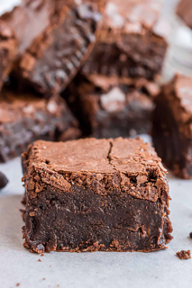

Fun Brownie Recipe!

This is a third recipe that I am using to practice building an html page for The Odin Project! The recipe I am using is not my own, and is retrieved from The Shugary Sweets website on 3 January 2023!
The Ingredients
- 1 cup unsalted butter
- 1/2 cup chocolate chips
- 2 cups granulated sugar
- 4 large eggs
<1i>1 tsp vanilla extract
- 3/4 cup unsweetened cocoa powder
- 1 cup all-purpose flour
- 1/2 tsp kosher salt
- 1/2 tsp baking powder
The Instructions
- Preheat oven to 350 degrees Fahrenheit. While the oven is preheating, prepare a 9-inch square baking dish by lining it with parchment paper or by spraying it with nonstick spray.
- In a medium saucepan, melt the butter on medium heat.
- Once the butter is melted, remove the saucepan from heat, and mix in the chocolate chips and sugar. Stir until the chocolate is fully melted.
- Next, add in the eggs one at a time, stirring well after each egg is added.
- Mix in the vanilla, cocoa powder, flour, salt, and baking powder. Stir until the batter is fully mixed, and there are no clumps of dry ingredients.
- Pour the batter into the dish you prepared in step one, and bake for about 40 minutes.
- After baking, remove the brownies from the oven, and let them cool well before cutting. They should be a fudgy brownie consistency.